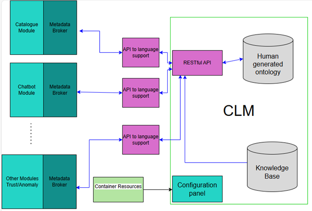
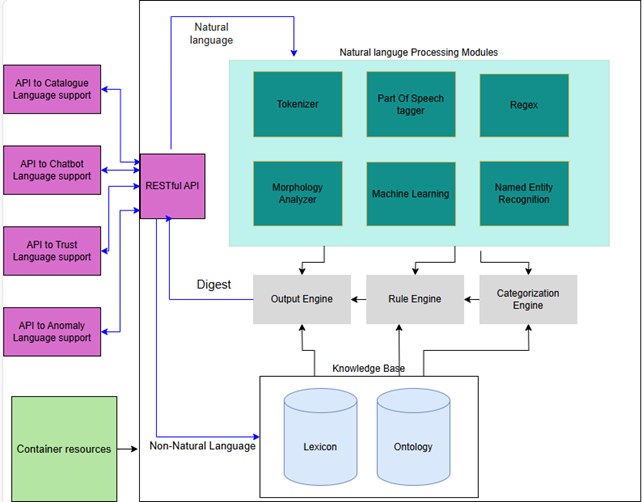

POWERED-BY
WP05-CLM
| Project Links |
|---|
| Software GitHub Repository https://github.com/ds2-eu/CLM-module |
| Progress GitHub Project https://github.com/orgs/ds2-eu/projects/36/views/1 |
General Description
The WP05-CLM module is responsible for enabling the multilingual conceptual understanding, annotation, and enrichment of textual data across the DS2 ecosystem. This includes the creation and lifecycle management of linguistic assets such as tokenizers, morphological analyzers, part-of-speech taggers, and annotated corpora in Romanian, Slovenian, and Greek. These resources feed into downstream modules such as SNER, chatbots, and catalogues, supporting both semantic discovery and interaction across dataspaces.
The CLM module orchestrates the domain-specific generation and refinement of ontologies, ensuring that extracted concepts align with DS2’s cross-linguistic and cross-domain architecture. It also exposes APIs and automated R&D workflows to allow other modules and end-users to register, share, and re-use conceptual resources.
Architecture
The figure below represents how the CLM module fits into the DS2 environment, showing its integration with other modules and its role in the broader pipeline:

The figure below shows the internal architecture of the CLM module, including its primary subcomponents, data flows, and key interfaces with other DS2 modules:

Component Definition
This module includes the following subcomponents and functionalities:
-
Tokenizer
Fragments a continuous stream of characters into words. -
Part of Speech (POS) Tagger
Identifies each token as a part of speech (e.g., adjective, noun) and tags it accordingly. -
Regex
Creates ontology elements based on tokens (e.g., telephone numbers, ISBN codes). -
Morphology Analyzer
Assigns each token a list of possible stems, each with its current conjugation. -
Machine Learning
Calculates features required for downstream machine learning components. -
Named Entity Recognition (NER)
Identifies entities such as places, people, organizations, events, and objects — even if they were unknown during ontology creation. -
Lexicon
A glossary of words for each supported language, with grammatical and syntactic constraints. These are mapped to the language-independent ontology, allowing a lexical entry to correspond to one or more ontological concepts under different syntactic and semantic conditions. -
Rule Engine
Predicts the "theatre" of a document (e.g., the primary geographic location mentioned), determines the topic, and infers other document-level properties. -
Categorization Engine
A machine learning model pretrained using ontological representations of annotated texts. It scores new documents based on how well they align with manually specified category metadata (e.g., how well a document fits within a supplier-defined category). -
Output Engine
Generates summaries and digests of the analyzed text.
Screenshots
No screenshots currently available for this module.
Commercial Information
| Organisation (s) | License Nature | License |
|---|---|---|
| Intuview | Commercial Use | TBD |
Top Features
-
Cross-Language Intelligence Tackles the core problem of language diversity (since the Tower of Babel) in order to enable access of all users to information in all supported languages by creating an ontological view of the information as a “lingua franca” for all users.
-
Ontology-Powered Search Converts human language into structured, hierarchical ontological representations to deliver deeper, more accurate search results that include not only the specific element that was searched but “sibling”, “parent” and “child” concepts that may be relevant.
-
Plug-and-Play for Chatbots Integrates with conversational agents to handle multilingual, complex user queries with context-aware precision to narrow down to specific datasets that may interest the user - even if he or she did not initially ask for them.
-
Automatic Disambiguation Resolves ambiguity and polysemy through ontologization in real time to ensure users get relevant and intended information.
-
Domain-Aware Customization Supports new sectors with semi-automated domain ontology creation, enabling rapid scaling.
-
Dynamic Ontology Growth Detects emerging concepts in live data streams and adapts the ontology on-the-fly to maintain relevance.
-
Smart Metadata Normalization Harmonizes diverse metadata into a common structure, making integration across data spaces seamless.
-
Multilingual Named Entity Recognition (NER) Identifies names, locations, organizations, and other entities—even if previously unknown—across supported languages.
-
API-Ready & Interoperable Offers REST and SOAP APIs for smooth integration with other DS2 modules like Chatbot, Catalogue, and Orchestration.
-
Business-Centric Results Delivers actionable ontological digests and metadata scores that directly support data analytics and strategic decision-making.
How To Install
⚠️ This module is currently integrated through the central IDT system (in progress).
Manual deployment is not supported. Documentation will be updated once integration is finalized.
Requirements
None at the moment.
Software
None at the moment.
Summary of installation steps
This module is not yet available for manual installation. Once deployment steps are finalized, the summary will include:
- Download/setup instructions
- Environment configuration
- API exposure
- Integration notes
Detailed steps
None at the moment.
How To Use
How to Use
Step 1 – Send Text for Processing
POST to:
Payload:
Response Example:
Step 2 – Retrieve Ontological Info
Use docId from the response:
https://demo.intuview.com/be_ds2/allInOneWeb//mainEng.php?v2=true&Action=getIntuviewInfoFromDB&docid=89
Returns JSON with:
- Metadata (topics, domains, etc.)
- Extracted concepts
- Similar projects from the dataset
Other Information
None at the moment.
OpenAPI Specification
To be added once IDT integration is complete and API endpoints are stable.
Additional Links
N/A